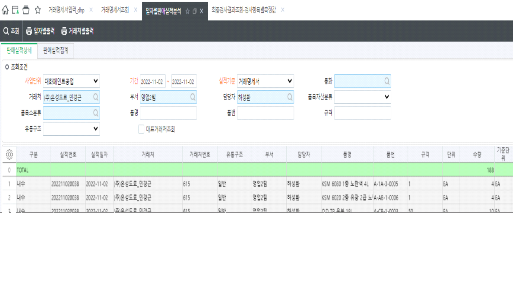
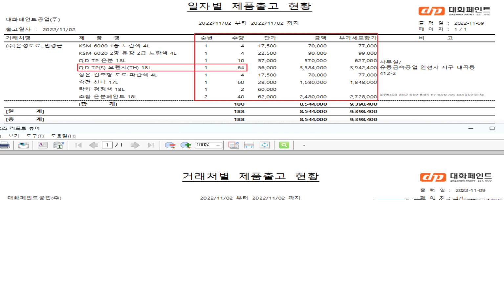

- 거래명세서에 동일한 품목이 있을 경우, 일자별판매실적분석 화면에서는 품목별로 합산하여 조회되고 있습니다.


- 출력물에도 합산된 내역이 조회되고 있는데 건별로 조회되도록 수정해주세요. 두 양식의 품목 조회순서도 거래명세서 순서에 맞게 통일시켜 주세요.
- 단가도 평균단가로 조회되고 있는데 개별 판매단가가 조회되어야 합니다.
- 일자별과 동일하게 컬럼명칭란 높이 조정, 합계절 굵게 변경해주세요.
- 일자별에 비해 거래처별의 제품명과 비고란이 너비가 작은데 순번, 수량, 단가, 금액, 부가세포함가 컬럼의 너비를 일자별과 유사하게 조정해주세요.

출처: \<http://61.250.183.6:8100/Page/Open/26774/100101/0/18820244>